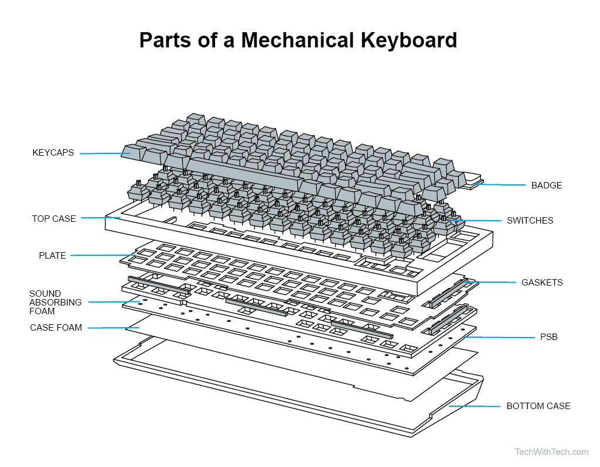
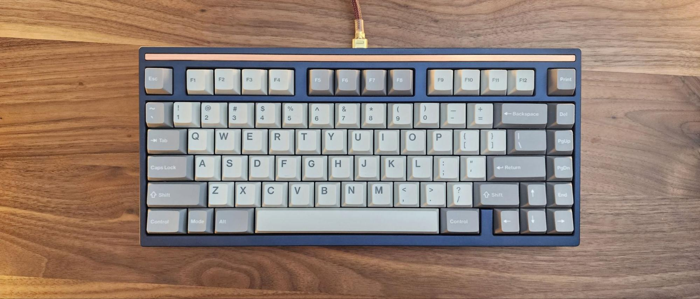

Mechanical keyboards are very complicated. Due to this one can tailor their keyboard to fit their likes and dislikes when it comes to feel, sound, looks, etc. The main parts of a mechanical keyboard which you may already have heard of are the: keycaps, switches, plate, pcb, and case. These work together to create the feel and sound of the keyboard, but they are not the only part of the equation. One can insert foam or modify their keyboard in other ways to fit their specifications. People will also spend hours individualy lubricating each swhich on the keyboard to make them more smooth and influence sound. In the end, once you have created you keyboard, it is the exact same as no other.
 